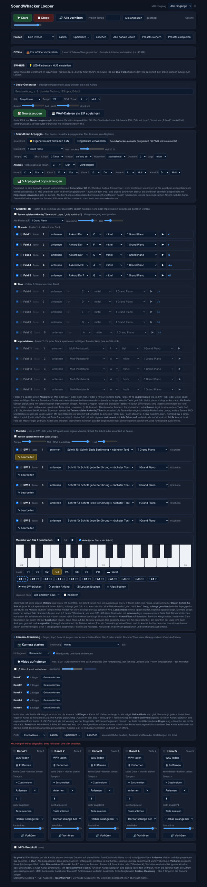
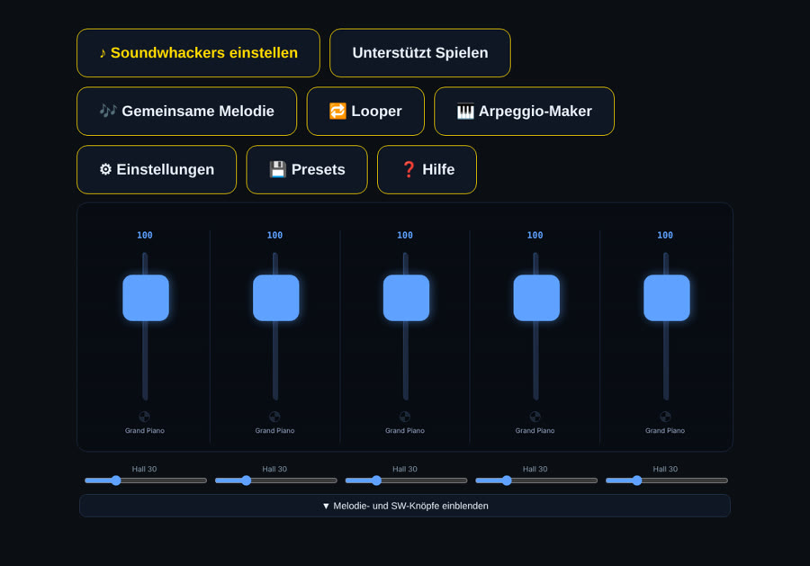

Erste Version
SoundWhacker Looper · Oktober 2026

275Knöpfe, Regler und Felder auf einer Seite – aufgeklappt rund 6 Bildschirme lang
Alles ist da, aber nichts ist zu finden.
Erste Version ansehen ↗Dieselbe App, zwei Versionen. Die KI hat schnell alle Funktionen gebaut – benutzbar wurde die App erst durch Gestaltung.

Alles ist da, aber nichts ist zu finden.
Erste Version ansehen ↗
Große Knöpfe, klare Namen, eine Aufgabe pro Bereich.
App öffnen ↗Musik-Apps mit KI entstehen nicht per Knopfdruck.
Die KI baut die Funktionen. Gestaltung macht sie bedienbar. Musikwissen und Unterrichtserfahrung machen sie gut.
Gute Musik-Apps brauchen Menschen, die Musik verstehen.
Die KI ist das Werkzeug – die Expertise hat, wer Musik versteht.